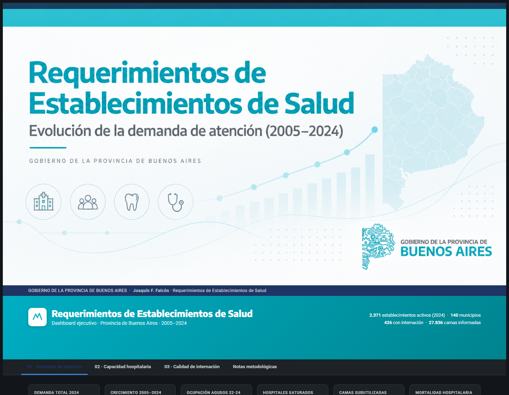
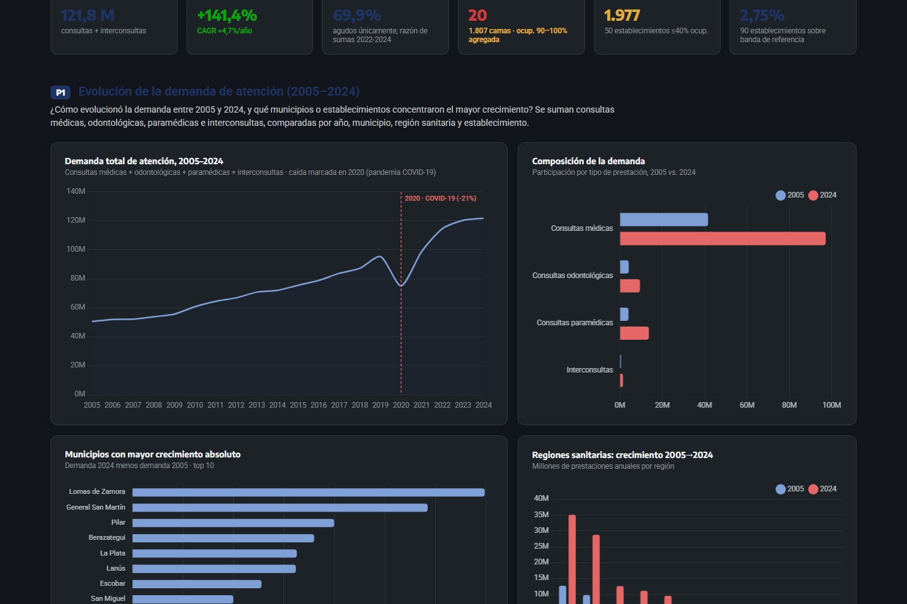
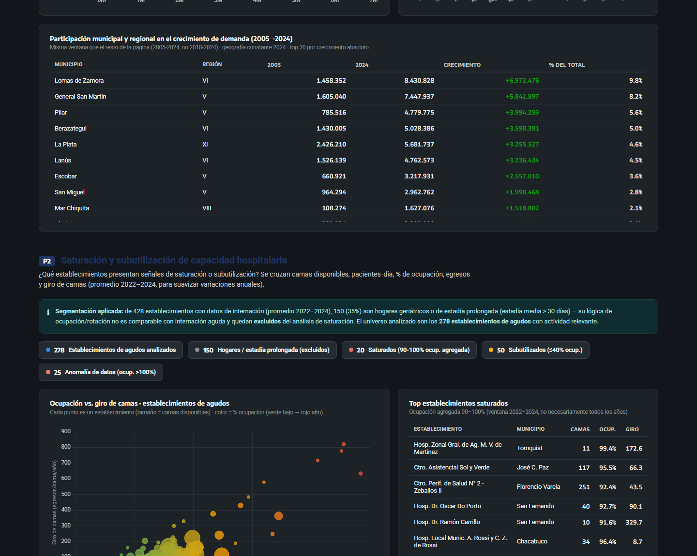

Rendimientos de Establecimientos de Salud — Buenos Aires
Análisis de demanda, capacidad instalada y desempeño hospitalario, 2005–2024 (43.725 filas).
- Problema
- ¿Cómo evolucionó la demanda hospitalaria en la Provincia de Buenos Aires y qué establecimientos muestran señales de saturación o desempeño atípico?
- Datos
- Datos públicos de rendimientos hospitalarios (2005–2024), cargados a SQL Server y auditados por identidad y consistencia antes de modelar.
- Proceso
- SQL (staging) → Power Query → modelo semántico Power BI en PBIP/TMDL → medidas DAX → dashboard de 3 páginas + vista HTML standalone.
- Resultado
- Dashboard público con demanda, capacidad y desempeño relativo, más una auditoría de calidad de datos documentada y reproducible.
Hallazgos
- Detecté un crecimiento de demanda de +141,4% entre 2005 y 2024 (CAGR 4,7%/año), con una caída de -21% en 2020 asociada a la pandemia.
- El análisis mostró que las regiones sanitarias V y VI concentran el 58% del crecimiento provincial, aislando reasignaciones administrativas del crecimiento real.
- De 278 establecimientos agudos analizados, 20 están saturados (1.807 camas) y 50 subutilizados (1.977 camas) — una señal directa para planificación de capacidad.
- La calidad de datos fue parte del análisis, no una nota al pie: un mismo nombre de establecimiento correspondía a dos identidades distintas antes de 2018, lo que invalidaba una serie temporal hasta separarlas.